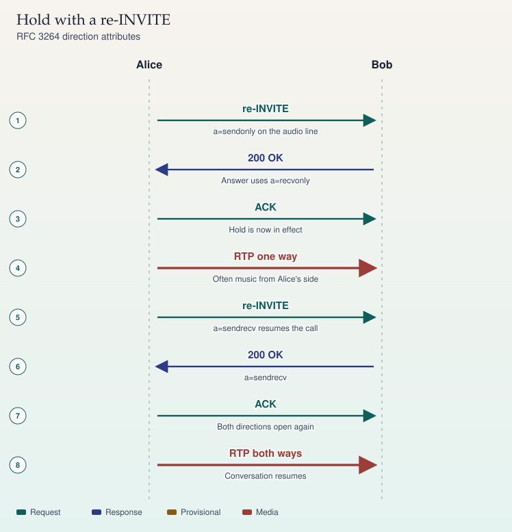

SIP · RFC 3264
Hold
Hold is a new offer that changes direction, not a mute button on one phone.
- re-INVITE — Same dialog. SDP a=sendonly, or inactive when neither side should send.
- 200 — Bob answers with recvonly, matching the direction.
- ACK — The new offer is in force. Music, if any, is a local decision.
- re-INVITE — Resume offers sendrecv again.
- 200 — Both directions restored.
If the far side answers sendrecv to a sendonly offer, you still have a direction bug. Check both SDPs before you blame the network.
Sources
Study card carried forward
SIP · RFC 3264
Hold
Hold is a change to an existing dialog. The same Call-ID stays. A new INVITE, with a higher CSeq, changes the direction attribute on the media line.

On a phone, swipe a wide ladder sideways. The steps below repeat the same sequence.
Sequence
- re-INVITE — Alice to Bob. a=sendonly on the audio line
- 200 OK — Bob to Alice. Answer uses a=recvonly
- ACK — Alice to Bob. Hold is now in effect
- RTP one way — Alice to Bob. Often music from Alice's side
- re-INVITE — Alice to Bob. a=sendrecv resumes the call
- 200 OK — Bob to Alice. a=sendrecv
- ACK — Alice to Bob. Both directions open again
- RTP both ways — Alice to Bob. Conversation resumes
Direction attributes
RFC 3264 section 8.4 replaced the old habit of setting the connection address to 0.0.0.0. On a modern offer:
a=sendonlymeans the offerer will send media and will not receive it. The answer should bea=recvonly(ora=inactiveif the answerer will not receive either).a=inactivemeans neither direction. Both sides use inactive. Use this when nobody should send, including music.a=recvonlyis the mirror of sendonly.a=sendrecvis the normal two-way state, and it is the default when no direction attribute is present.
Music on hold is an application choice. The RFC does not require it. If Alice offers sendonly, her side is allowed to send a music stream. Bob has agreed only to receive.
v=0 o=alice 2890844526 2890844527 IN IP4 192.0.2.10 s=Hold c=IN IP4 192.0.2.10 t=0 0 m=audio 49170 RTP/AVP 0 a=rtpmap:0 PCMU/8000 a=sendonly
Bob's answer uses his own address and a=recvonly. The port stays a real RTP port. Setting the port to 0 rejects the stream. That removes media. It is not hold.
Sources
- RFC 3264, section 8.4 (putting a unicast stream on hold)
- RFC 3261, section 14 (modifying an existing session)